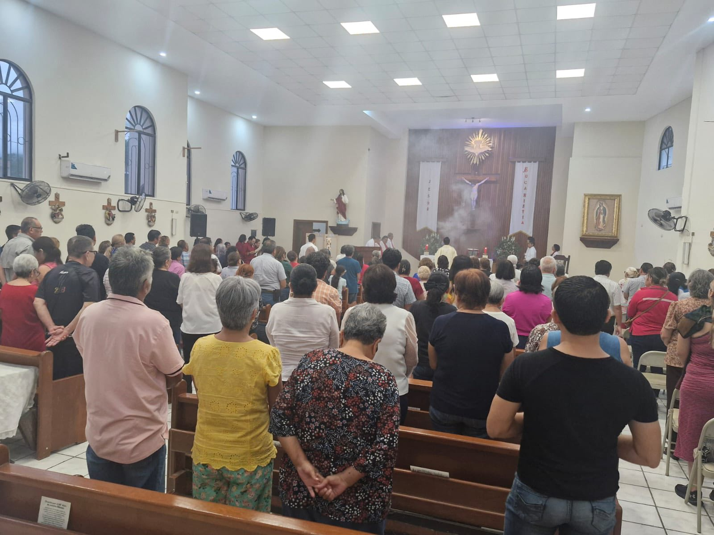
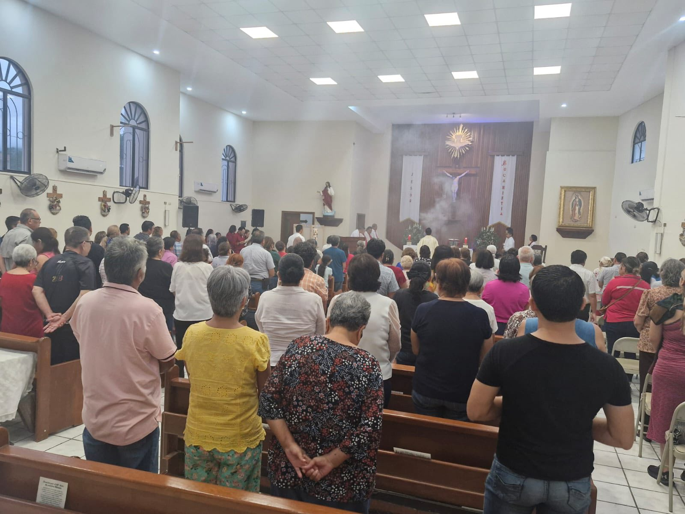

Bienvenidos y bienvenidas a nuestra comunidad 🙏
Bienvenidos a la Capilla del Espíritu Santo, un lugar donde todos somos parte de una misma familia guiada por la fe.
Aquí compartimos momentos de oración, reflexión y servicio, buscando siempre crecer juntos en el amor de Dios.
Sobre nosotros 👪
Somos una comunidad unida por la fe católica y el deseo de servir al prójimo. Nuestra misión es unica y pura:
acompañar a cada persona en su propio camino espiritual, fomentando valores de
solidaridad, esperanza y amor. Creemos en la importancia de vivir la fe con alegría y en comunidad.
 

Horarios de misa ⏰
Nuestras puertas están siempre abiertas para quienes deseen participar en las celebraciones y actividades.
Te esperamos con los brazos abiertos para compartir la Eucaristía y fortalecer juntos nuestra fe.
- Lunes a Sábado – 7:00 PM
- Domingos – 8:00 AM - 10:00 AM - 12:00 PM
Galería 📸
A lo largo del año realizamos diversas actividades que fortalecen la unión de nuestra comunidad.
En esta sección podrás encontrar fotografías de eventos, celebraciones y momentos especiales
que reflejan la alegría de vivir la fe juntos.
Contacto ☎️
Si deseas acercarte a la comunidad o simplemente saludarnos, puedes escribirnos o visitarnos.
Siempre estaremos felices de recibirte y compartir contigo la paz de Cristo.
Dirección: Las Torres 1202, Sierra Ventana, 87030 Cdad. Victoria, Tamps.
Telefono: +52 (834) 454 3221
Facebook: Capilla del Espíritu Santo Oficial